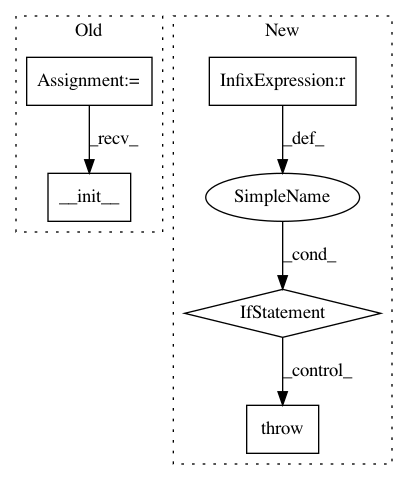

01c2aa38bde1f3b97360204cae96076db04c9c95,gpflow/transforms.py,Logistic,__init__,#Logistic#Any#Any#,152
Before Change
s(x) = 1 / (1 + \exp(-x))
def __init__(self, a=0., b=1.):
Transform.__init__(self)
assert b > a
self.a, self.b = float(a), float(b)
def forward_tensor(self, x):
After Change
s(x) = 1 / (1 + \exp(-x))
def __init__(self, a=0., b=1.):
if a >= b:
raise ValueError("a must be smaller than b")
self.a, self.b = float(a), float(b)
def forward_tensor(self, x):
ex = tf.exp(-x)
In pattern: SUPERPATTERN
Frequency: 4
Non-data size: 5
Instances
Project Name: GPflow/GPflow
Commit Name: 01c2aa38bde1f3b97360204cae96076db04c9c95
Time: 2017-11-23
Author: st--@users.noreply.github.com
File Name: gpflow/transforms.py
Class Name: Logistic
Method Name: __init__
Project Name: GPflow/GPflow
Commit Name: 5b1654914ef36dc22f5a9a1ee132c8e323603b24
Time: 2017-11-06
Author: st@prowler.io
File Name: gpflow/transforms.py
Class Name: Logistic
Method Name: __init__
Project Name: tensorlayer/tensorlayer
Commit Name: 88ff1953e94cfbbcd53f4d659a1099fce8a7344e
Time: 2018-04-13
Author: DEKHTIARJonathan@users.noreply.github.com
File Name: tensorlayer/layers/convolution.py
Class Name: UpSampling2dLayer
Method Name: __init__
Project Name: tensorlayer/tensorlayer
Commit Name: 88ff1953e94cfbbcd53f4d659a1099fce8a7344e
Time: 2018-04-13
Author: DEKHTIARJonathan@users.noreply.github.com
File Name: tensorlayer/layers/convolution.py
Class Name: DownSampling2dLayer
Method Name: __init__